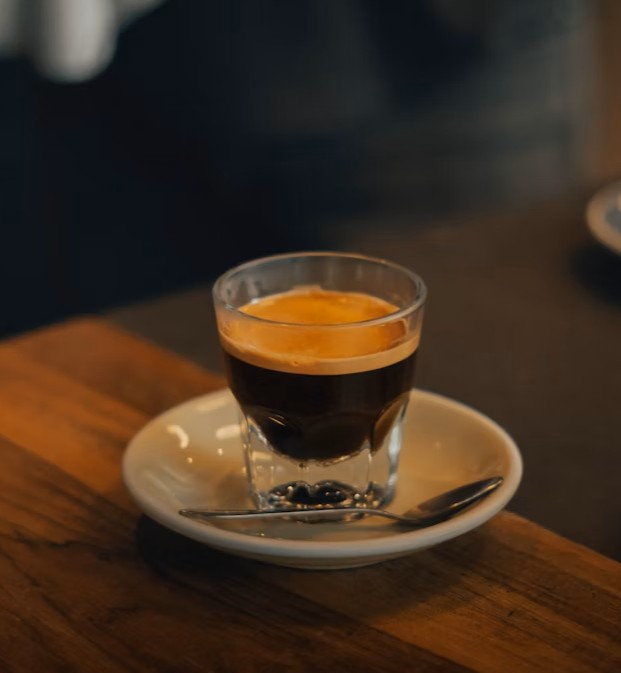
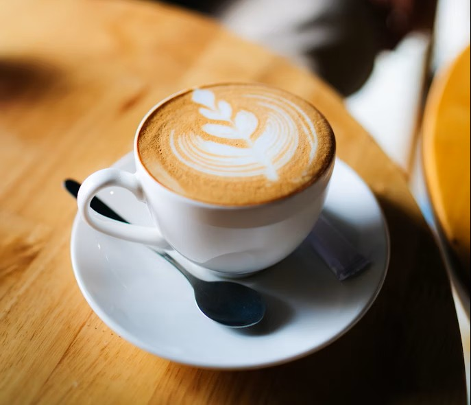
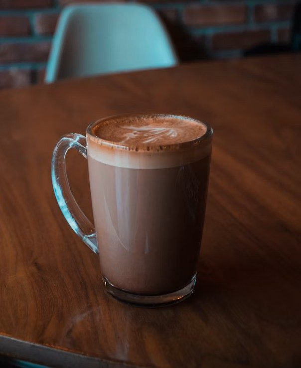
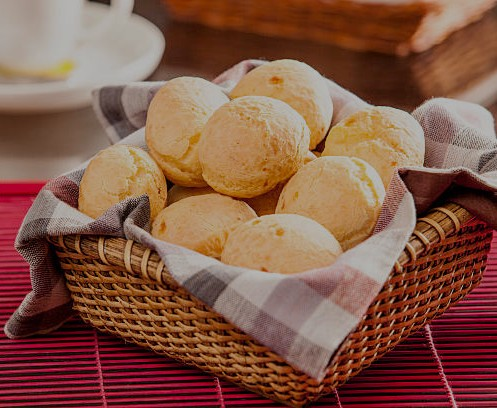
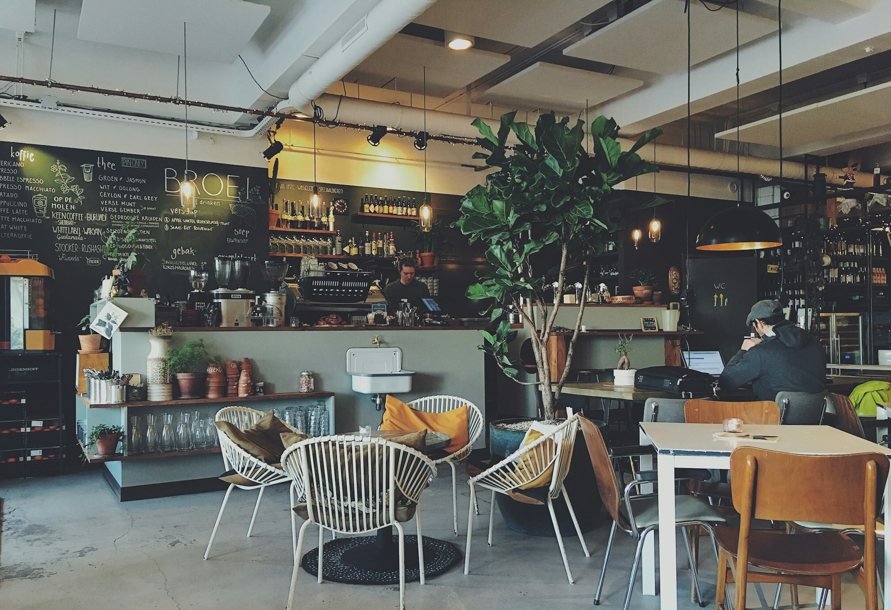

Café, prosa e um bom acaso.
O lugar perfeito para se perder entre as páginas de um livro e se encontrar em um café fresco.
Explore nossa estanteNossas Especialidades

Crônica - espresso

Dom Casmurro - cappuccino

O Corvo - mocha

Memórias Póstumas - pão de queijo

Onde cada xícara acompanha uma nova história
A Sinopse Café nasceu da união de duas paixões: o café de qualidade e a magia dos livros. Acreditamos que grandes histórias merecem ser acompanhadas por um café excepcional. Criamos um espaço onde você pode se perder nas prateleiras e se encontrar em cada xícara.
Venha nos visitar
Endereço: R. Café Quentin, 9¾
Horários: Seg a Sáb, das 8h às 19h
Ver no mapa